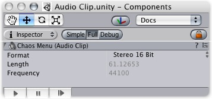

Previous
Previous
Audio Clips are used by Audio Sources to represent the audio asset imported into Unity.

The Audio Clip
Audio Clips just work. The only thing you should have to do with them is reference them from within Audio Sources.
Properties
Sound assets only have 3 read-only properties.
| Property: | Function: |
|---|---|
The format the sound is stored in. Unity supports 4 raw formats and one compressed.
| |
| The duration of the sound file in seconds. | |
| The sampling frequency of the file. |
Supported sound formats
Unity currently supports the following file formats:
- AIFF
- Both mono and stereo. The sound will be stored as-is inside the player-data. No compression will be attempted.
- WAV
- Both mono and stereo. The sound will be stored as-is inside the player-data. No compression will be attempted.
- MP3
- Mono and stereo. Note that the audio will be uncompressed in the editor and stored uncompressed in the player. If you want to conserve space, use Ogg Vorbis files instead.
- Ogg Vorbis
- Both mono and stereo. The file will be stored compressed in the player-data and streamed on the fly. When using Ogg vorbis it is recommended to always use 44khz frequency.
Stereo or Mono?
Stereo sounds are always played as is. They are not faded out over distance and they do not have panning. This makes them optimal for music and ambient sources.
Mono sounds always fade out over distance and do panning. This is good for all effects requiring 3D positional sound.
Choosing the right format
For music you should always use the ogg vorbis format. The frequency should be 44khz and it should be stereo. (44 khz is recommended since playback will be faster than with 22khz)
Short audio clips (eg. foot steps, bullet explosion) you should use AIFF or WAV with mono and either 22khz or 11khz. Usually you should not use 44khz since that takes up too much disk space and the quality difference is not hearable.
Long audio clips should use ogg vorbis and mono. A good rule of thumb is that if a sound file is more than 200k uncompressed, then it makes sense to use ogg vorbis and stream the sound instead (when using ogg vorbis, always choose 44khz).
Hints
- Stereo sounds are always played as-is. If you want to use attenuation and other 3D audio effects, use mono sounds.
- You can get a free Ogg Vorbis converter from http://sbooth.org/Max (Mac) or from http://www.rarewares.org/ogg.html (Windows)